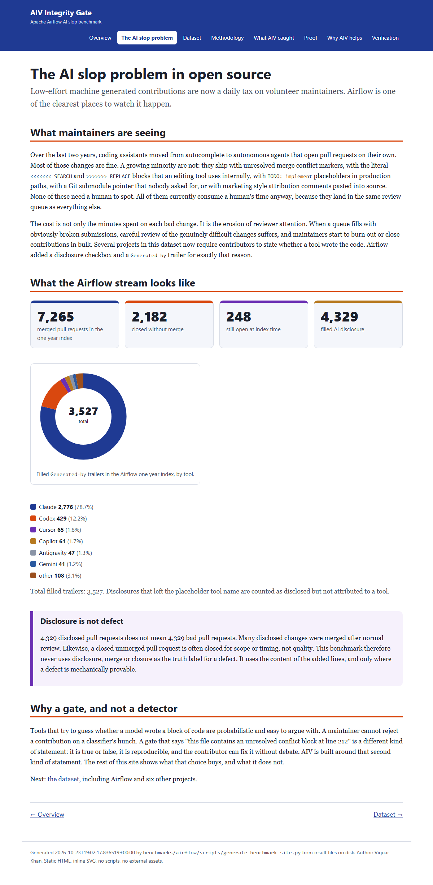

The AI slop problem in open source
Low-effort machine generated contributions are now a daily tax on volunteer maintainers. Airflow is one of the clearest places to watch it happen.
What maintainers are seeing
Over the last two years, coding assistants moved from autocomplete to autonomous agents that open pull requests on their own.
Most of those changes are fine. A growing minority are not: they ship with unresolved merge conflict markers, with the literal
<<<<<<< SEARCH and >>>>>>> REPLACE blocks that an editing tool
uses internally, with TODO: implement placeholders in production paths, with a Git submodule pointer that nobody
asked for, or with marketing style attribution comments pasted into source. None of these need a human to spot. All of them
currently consume a human's time anyway, because they land in the same review queue as everything else.
The cost is not only the minutes spent on each bad change. It is the erosion of reviewer attention. When a queue fills with
obviously broken submissions, careful review of the genuinely difficult changes suffers, and maintainers start to burn out or
close contributions in bulk. Several projects in this dataset now require contributors to state whether a tool wrote the code.
Airflow added a disclosure checkbox and a Generated-by trailer for exactly that reason.
What the Airflow stream looks like
Generated-by trailers in the Airflow one year index, by tool.- Claude 2,776 (78.7%)
- Codex 429 (12.2%)
- Cursor 65 (1.8%)
- Copilot 61 (1.7%)
- Antigravity 47 (1.3%)
- Gemini 41 (1.2%)
- other 108 (3.1%)
Total filled trailers: 3,527. Disclosures that left the placeholder tool name are counted as disclosed but not attributed to a tool.
Disclosure is not defect
4,329 disclosed pull requests does not mean 4,329 bad pull requests. Many disclosed changes were merged after normal review. Likewise, a closed unmerged pull request is often closed for scope or timing, not quality. This benchmark therefore never uses disclosure, merge or closure as the truth label for a defect. It uses the content of the added lines, and only where a defect is mechanically provable.
Why a gate, and not a detector
Tools that try to guess whether a model wrote a block of code are probabilistic and easy to argue with. A maintainer cannot reject a contribution on a classifier's hunch. A gate that says "this file contains an unresolved conflict block at line 212" is a different kind of statement: it is true or false, it is reproducible, and the contributor can fix it without debate. AIV is built around that second kind of statement. The rest of this site shows what that choice buys, and what it does not.
Next: the dataset, including Airflow and six other projects.